Практичний досвід · журнал «ДентАрт» 2016 №4
Викривлені канали
СURVED CANALS
Структура матеріальних об'єктів природи настільки різноманітна і багатогранна, що людський розум неспроможний осягнути її у повному обсязі. У природі також немає цілком одноманітних, прямолінійних і незмінних об'єктів. Це твердження абсолютно справедливе стосовно системи кореневих каналів.
Усі кореневі канали мають викривлення, а багато з них демонструють такі викривлення, що це навіть не підлягає опису. Складність анатомії, безумовно, впливає на успіх ендодонтичного лікування. A. Castellucci у своїх дослідженнях підтверджує, що 90% випадків невдач ендолікування стаються через неповноцінні формування, очищення і обтурацію кореневих каналів. У складних випадках не може бути простих і швидких рішень, принаймні, якщо говорити про повний комплекс лікування. Однак на певних етапах більш швидкі рішення цілком можливі завдяки інноваціям у створенні нових інструментів та матеріалів для іригації, формування і обтурації системи кореневих каналів. Велике значення в успіху мають також знання та практичний досвід роботи. Але навіть за наявності всіх цих умов потрібні розуміння і чітке знання мети і засобів на кожному етапі лікування.
Етапи лікування залишаються стандартними, однак методи і засоби їх виконання можуть змінюватися в залежності від ступеня складності клінічної ситуації і нових розробок для інструментальної обробки кореневих каналів.
Передусім слід оцінити клінічну ситуацію за даними рентгенологічного дослідження, визначити, по можливості, ступінь кривизни, форму кореня самого каналу та апікального звуження. Що ж до апікального звуження, то ідентифікувати за рентгензнімком можна лише множинні звуження типу С, інші ж види допоможе визначити лише КТ дослідження (фото 1) або навігація кореневого каналу. Ступінь кривизни кореневого каналу можна оцінити за розміром її радіуса. Чим більший радіус, тим рівномірніша кривизна і легша обробка.
Інтраоральна рентгенографія — це лише допоміжний і не завжди об'єктивний метод дослідження, оскільки, наприклад, бічний різець верхньої щелепи має викривлення у піднебінному напрямку, невидиме на знімку (рис. 2). У нижнього першого моляра дистальна система кореневих каналів часто має апікальне викривлення в бік язика майже під прямим кутом, яке визначається лише мануально. Викривлення ж медіального щічного каналу дистально буде видно на знімку, тоді як язичне на знімку не визначається (фото 2). Що ж до верхніх молярів, то у цих зубів викривлення є як у щічній системі, у дистощічного каналу, так і в медіальних щічних каналів, ці викривлення обидва спрямовані дистально (фото 3).
Кожна третина каналу, що має викривлення, вимагає особливої уваги і визначеної тактики обробки. Правила роботи з цими викривленнями такі:
- викривлення апікальної третини у жодному разі не можна випрямляти;
- викривлення середньої третини згладжуються по великій кривизні;
- викривлення коронкової частини повністю усуваються.
Тепер детальніше по кожній позиції. Після створення прямолінійного доступу до кореневих каналів і видалення пульпи з порожнини зуба слід дослідити кореневі канали з допомогою сталевого К-файла 0.08 або 0.10 2% конусності.
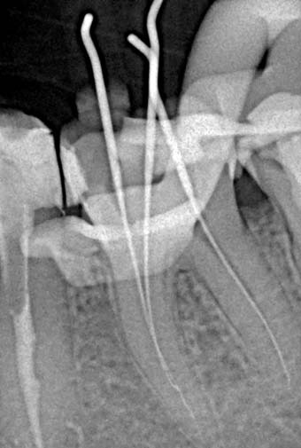
Фото 1. Апікальне звуження типу С.
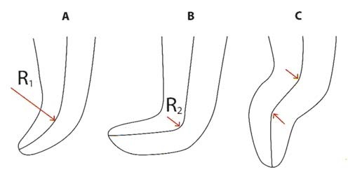
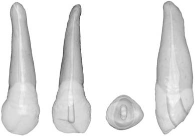
Рис. 1. Поділ каналів за типом кривизни. Ingl (1976). Рис. 2. Апікальне викривлення верхнього бічного різця.
Інструменти К-стилю найгнучкіші, володіють пам'яттю форми, мають пасивний кінчик і не змінюють форму апікального звуження навіть при незначному виході за його межі. Рухи, здійснювані К-файлами, можуть бути як обертальними, так і зворотно-поступальними. Попередньо вигнуті за ступенем кривизни файли (фото 4) вводять у кореневий канал з лубрикантом, щоб уникнути колапсу пульпи. Характер рухів зворотно-поступальний з незначними, до 1 мм, екскурсіями. Такі рухи потрібні, щоб захистити вигнуту частину файла від випрямлення, оскільки екскурсії з більшою амплітудою призведуть до того, що файл пропустить потрібну кривизну і пройде у пряму ділянку каналу і випрямиться. У результаті ми втрачаємо апікальне звуження, робочу довжину, справжню форму апікальної третини каналу. Подальше використання інструментів більшого розміру призведе до ускладнень, таких як перфорація кореневого каналу за анатомічним отвором, створення сходинки, розрив апікального звуження.
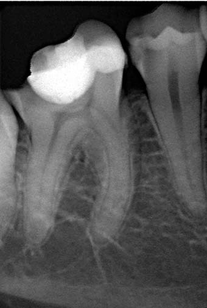
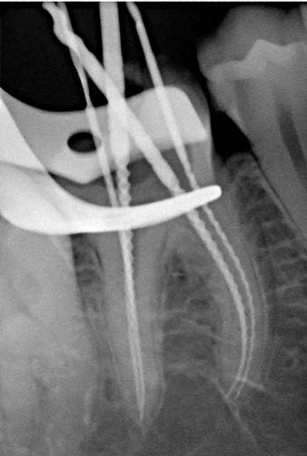
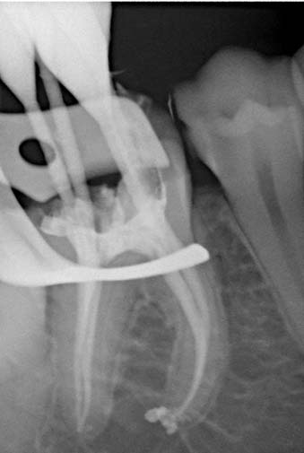
Фото 2. Приклад апікальних викривлень нижнього моляра.
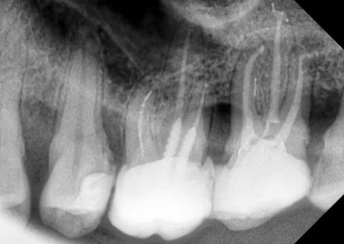
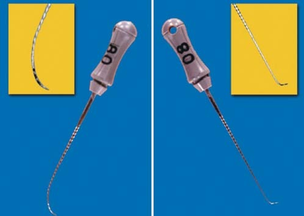
Фото 3. Приклад апікальних викривлень верхнього моляра. Фото 4. Попередньо вигнуті К-файли.
Сталевий файл має пам'ять форми і завжди йде по великій кривизні, тому, випрямляючись, він завжди створює уступ саме на цій кривизні (рис. 3). Мало того, попередньо вигнуті файли, торкаючись обструкції всередині каналу, при обертальних рухах завжди її обходять, чого не можна сказати про прямі файли, які потрапляють в обструкцію, немов у пастку, припиняючи рух. Не рекомендується використовувати для навігації інструменти R-стилю, тобто римери, особливо при викривленій апікальній третині, оскільки при рухах цього інструмента в зоні кривизни виникає ефект «піскового годинника» (рис. 4). Це означає перерозширення і дислокацію апікального звуження, не кажучи вже про створення сходинок і уступів на стінках кореневого каналу. Такі дії повністю блокують апікальну кривизну.
Але якщо таке сталося, не треба впадати у відчай! Канал усе ще на місці, він не перфорований, і є ще надія його реанімувати. Не можна лише намагатися тиснути на інструмент, застосовувати інструменти з активними кінчиками, наприклад С+файли, щоб уникнути створення хибного каналу і перфорацій, поломки інструмента. Достатньо відновити спробу з К-файлом 0.08 або 0.10 з дуже маленьким вигином на кінці, який повинен бути звернений у бік кривизни і просуватися каналом без надмірних зусиль. Сходинку можна усунути, використовуючи step-back техніку обробки апікальної ділянки ручними К-файлами з рухами в техніці підзаведення годинника у такій послідовності:
08 – 10 – 08 – 15 – 10 – 20 – 15 – 25 – 20
Усі файли слід вводити на повну робочу довжину. У своїй практиці я використовую ручні інструменти з неіржавіючої сталі Ready Steel (Dentsply Maillefer), які випускаються вже простерилізованими гамма-променями у блістерній упаковці. Кожен інструмент готовий до використання.
Хоча в таких випадках не рекомендується використовувати ручні нікельтитанові інструменти, оскільки вони не мають пам'яті форми, але це стосується лише інструментів з 2% конусністю. Ручні інструменти Protaper Universal (Dentsply Maillefer) з попередньо вигнутими кінчиками якнайліпше годяться для цієї мети. Тільки рухи цими файлами повинні робитися в техніці збалансованих сил. Файл вводиться проти годинникової стрілки до щільного контакту зі стінками каналу з апікальним тиском і потім повертається на 360° за годинниковою стрілкою. Спочатку файл, просуваючись, стискається на рівні 180°, але потім, зрізуючи дентин зі стінок, звільняється і обертається вільніше. Подальше просування файла йде проти годинникової стрілки і знову за годинниковою на 360°. Три таких цикли просування і зрізання — і файл потрібно вийняти й очистити.
Викривлення середньої третини (S-форма)
Тепер можна поговорити про викривлення у середній третині кореневого каналу. Такі викривлення ще називають типу «байонети», або викривлення S-форми. Вони найчастіше зустрічаються у верхніх і нижніх других премолярів (фото 5). Перше викривлення у них спрямоване медіально, друге — дистально. Абсолютно очевидно, що з цих двох викривлень друге вимагає щадного ставлення, тому що його випрямлення може призвести до зміщення апікального отвору. Не менш важливо згадати, що потрібно по можливості перешкоджати стоншенню дентину кореня, яке може призвести до стрічкової перфорації або перфорації латерального відділу кореня.
Щадне ставлення до другого викривлення передбачає виконання перерахованих вище технік і правил, що стосуються викривлення апікальної ділянки кореня. Завдання те саме — пройти кореневий канал-«байонет» до апікального звуження. Усі файли повинні мати подвійний вигин, рухатися з мінімальними екскурсіями, щільно прилягаючи до стінок першої та другої кривизни, не випрямляючись і не розширюючи канал у небажаних місцях. Крім того, починаючи роботу з К-файла 0.15, можна прибрати ріжучі грані файла у тих місцях, які не будуть працювати в каналі (там, де небезпечно зрізати дентин): дистальна частина апікальної кривизни і медіальна частина корональної частини кривизни (фото 6). Це можна зробити абразивною головкою типу «арканзас», звичайно, без фанатизму, щоб надмірно не стоншити файл і не зламати його згодом усередині каналу. Особливу увагу слід звертати на орієнтацію інструмента у момент його повторного занурення в канал. Після виймання інструмента його слід очистити, повторно зігнути у потрібних напрямках і знову ввести в канал, і так доти, доки не буде досягнуто анатомічної верхівки.
Після згладжування кривизни S-форми ручними файлами можна досить легко обробляти такі канали машинними нікельтитановими файлами, які добре центровані, не випрямляються в небезпечних зонах кривизни, зберігаючи початкову анатомію каналу.
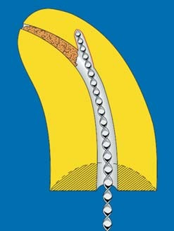
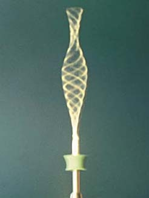
Рис. 3. Схема створення уступу по кривизні каналу. Рис. 4. Схема ефекту піскового годинника при обертанні вигнутого інструмента.
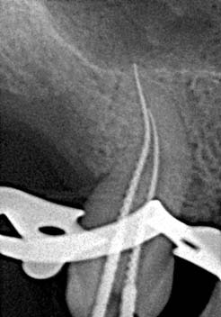
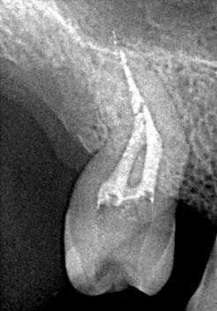
Фото 5. Викривлення середньої третини каналу S-форми на прикладі верхнього першого моляра.
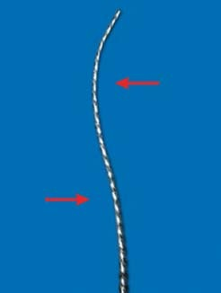
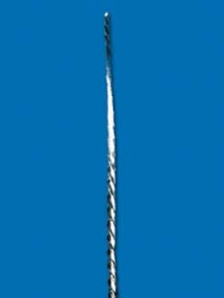
Фото 6. Викривлення верхньої третини каналів на прикладі нижнього і верхнього молярів (вид інструмента з двох боків).
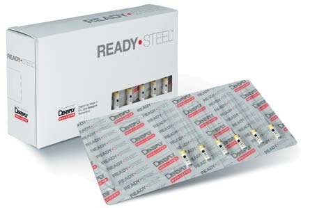
Викривлення коронкової третини
Після навігації кореневого каналу К-файлом 0.10 та визначення попередньої робочої довжини за допомогою апекслокатора підтверджуємо цю довжину рентгенографічно. Після підтвердження робочої довжини створюємо «килимову доріжку» для руху машинних нікельтитанових інструментів.
Якщо кривизну апікальної частини треба зберігати, кривизну середньої третини згладжувати і пом'якшувати, то викривлення коронкової третини має бути усунене перед формуванням і очищенням кореневого каналу. Такі викривлення найчастіше зустрічаються в медіальній системі нижніх молярів і медіально-щічній системі верхніх молярів (рис. 5). Перш ніж формувати канал з такою кривизною, після його навігації і попереднього визначення робочої довжини слід злегка розширити його коронкову і середню третину, що дає масу переваг при подальшій роботі в каналі:
- створює прямолінійніший доступ до апікальної третини каналу;
- усуває дентинні «карнизи» в коронковій третині каналу, що дозволяє швидше, ефективніше і безпечніше провадити подальшу інструментацію, дає операторові більше тактильної впевненості при просуванні файлів апікально;
- нівелює ризики створення уступів, стрічкових перфорацій, транспортацій апікального отвору і поломки інструментів;
- сприяє більшому проникненню іригантів і ліпшому видаленню дентинних ошурків з апікальної зони;
- менше змінює показання робочої довжини.
Існує дуже багато авторських методик випрямлення кривизни корональної третини кореневого каналу: «step-down» техніка Goerig, техніка leeb і т. д. На мою думку, більшої уваги заслуговують антикурватурний метод, запропонований Abou-Rass, Frank і Glick, і метод попереднього розширення K. Ruddle. Суть поєднання цих методик полягає в тому, що перший, початковий файл, введений до опору або до апікального звуження, за наявності кривизни корональної третини відхиляється від однойменного горбика до протилежного. Далі працює машинний нікельтитановий інструмент, спеціально призначений для роботи в устьовій частині каналу, наприклад Protaper Universal Sx, здійснюючи вимітаючі рухи в напрямку від біфуркації до зовнішньої стінки каналу без апікального тиску. Потім провадиться іригація каналу й ініціальний файл вводиться повторно до апікального звуження. Якщо файл змінив свій напрямок у каналі і відхилився до однойменного горбика, то попереднє розширення завершено і корональну кривизну усунуто (фото 7).
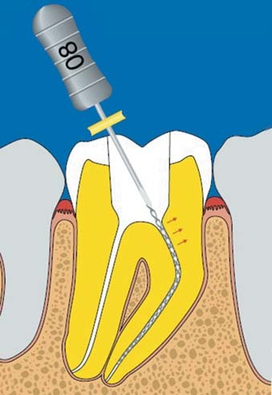
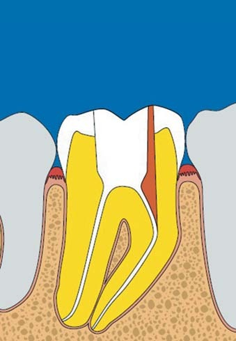
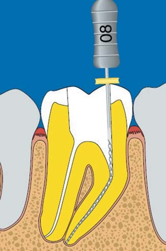
Рис. 5. Схема випрямлення верхньої третини кореневого каналу.
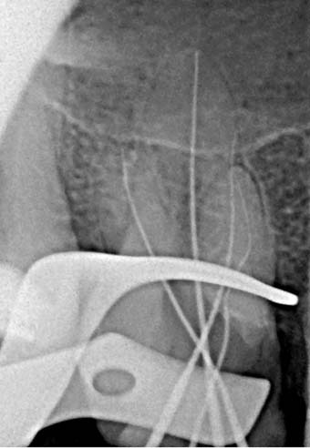
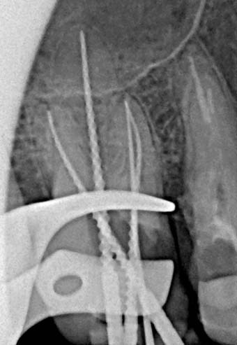
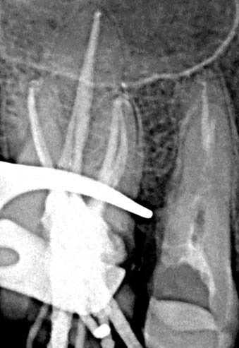
Фото 7. Випрямлення верхньої третини каналу на клінічному прикладі.
Як уникнути ускладнень
Формування уступів, блоків, перфорацій і транспортації апікального отвору — ускладнення, які можуть виникнути при препаруванні кореневого каналу. Їх можна уникнути, якщо дотримуватися відносно простих правил.
- Ретельно аналізувати дані рентгенологічних досліджень щодо виду, характеру, типу і ступеня викривлення кореневого каналу, а також наявності дентиклів та кальцифікації просвіту каналу.
- Попередньо згинати кінчик початкового файла в залежності від ступеня викривлення.
- Використовувати для навігації тільки К-файли маленького розміру .06, .08, 0.10 2% конусності.
- Використовувати файли проміжних розмірів, в тому числі і машинні нікельтитанові Pathfiles, Proglider (Dentsply Maillefer).
- Модифікувати ріжучі частини ручних інструментів відповідно до клінічної ситуації.
- Застосовувати такі техніки ручної обробки кореневого каналу при його навігації:
- а) зворотно-поступальні рухи у прямій частині кореневого каналу з легким апікальним тиском;
- б) рухи в техніці збалансованих сил у викривленій частині кореневого каналу (60° за годинниковою стрілкою без апікального тиску, 120° проти годинникової стрілки з апікальним тиском, щоб зруйнувати дентинні стінки, і потім знову за годинниковою стрілкою 60° без апікального тиску, щоб звільнити ріжучі частини інструмента і вивести дентинні ошурки з каналу). Такі рухи краще центрують інструмент у кореневому каналі і зменшують кількість ошурків дентину за межами кореневого каналу.
- Використовувати при необхідності ручні нікельтитанові інструменти 4-6% конусності (ProTaper Universal, Dentsply Maillefer).
- Завжди здійснювати попереднє розширення коронкової частини кореневого каналу.
Протокол інструментальної обробки викривлених кореневих каналів
- Ендодонтична терапія провадиться в умовах локальної анестезії з ізоляцією робочого поля і прямолінійним доступом до всіх кореневих каналів.
- Іригація порожнини зуба розчином гіпохлориту натрію 5.25% для ліпшого розчинення органічних тканин.
- Навігація кореневого каналу в присутності лубриканта на основі ЕДТА попередньо викривленим К-файлом 0.10 до робочої довжини або до опору. При неможливості просування файла згаданого розміру перейти до файлів меншого розміру, потім знову до файла 0.10.
- Створити «килимову доріжку», використовуючи машинні нікельтитанові інструменти (Pathfiles 0.13, 0.16, 0.19 або Proglider) у присутності лубриканта, здійснюючи зворотно-поступальні рухи з легким апікальним тиском, або використовувати ручні інструменти 0,2% конусності нестандартних розмірів. За наявності кальцинованих кореневих каналів поточну іригацію ліпше здійснювати шляхом чергування розчинів гіпохлориту натрію та ЕДТА, а замість К-файлів для навігації використовувати С+файли, які мають активний кінчик і набагато легше долають перешкоди.
- Іригація розчином гіпохлориту натрію 5.25%.
- Обробка коронкової частини каналу ProTaper Universal Sx (PTU) або борами Gates Glidden.
- Іригація розчином гіпохлориту натрію 5.25% і рекапітуляція К-файлом 0.10.
- Використання машинних нікельтитанових інструментів у стандартній техніці (ProTaper Next або Wave One) до робочої довжини з іригацією розчином гіпохлориту натрію 1-3% і рекапітуляцією К-файлом 0.10 після застосування кожного машинного інструмента.
- Рентгендослідження для верифікації кореневих каналів та підтвердження робочої довжини.
- Фінішна іригація кореневих каналів з використанням розчинів гіпохлориту натрію 1-3%, етилендіамінтетраоцтової кислоти 17%, дистильованої води або фізіологічного розчину.
- Висушування каналів стерильними паперовими штифтами і подальша обтурація.
Розглянемо кілька клінічних випадків з викривленими кореневими каналами.
Клінічний випадок 1
Пацієнтка 52 років звернулася в клініку зі скаргами на біль від температурних подразників, що ірадіює в нижню щелепу праворуч. У зубі 47 виявлено глибоку каріозну порожнину, сполучену з порожниною зуба, що свідчило про необхідність ендодонтичної терапії. Після створення ендодонтичного доступу виявлено 3 кореневі канали: один в дистальній системі і два в медіальній.
Після навігації каналів з використанням С+файла 0.8 і К-файла 0.10 (Dentsply Maillefer) і досягнення робочої довжини було зроблено прицільний рентгенівський знімок, який допоміг виявити викривлення медіальної системи S-форми, причому зі спільним апікальним отвором. «Килимова доріжка» була виконана з використанням Pathfiles 0.13 і 0.16. Препарування кореневих каналів робилося інструментами ProTaper Next X1 і ProTaper Next X2 до робочої довжини. Потім було здійснено верифікацію кореневих каналів і подальшу обтурацію системою GuttaCore із силером АН Plus.
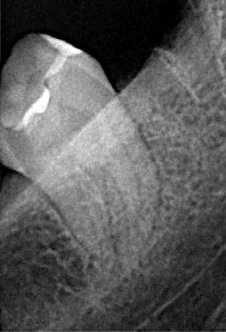
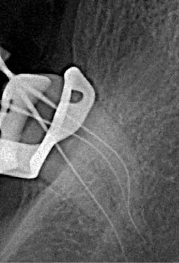
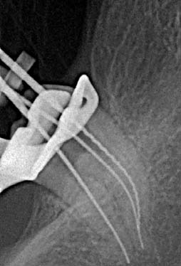
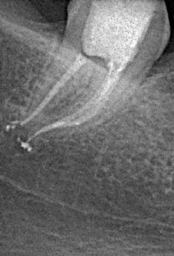
Клінічний випадок 2
Пацієнтка 28 років звернулася з болем і дискомфортом у верхньому правому першому молярі. Після ревізії старої реставрації було виявлено сполучення з порожниною зуба. Після створення доступу до кореневих каналів проведено навігацію, яка виявила різке викривлення медіального щічного кореневого каналу в середній його третині і багнетоподібне викривлення дистального щічного каналу.
Для зменшення циклічного навантаження на інструменти, які надалі застосовувалися для формування системи кореневих каналів, після створення «килимової доріжки» використовувався ProTaper Universal Sx для випрямлення верхньої третини щічної системи кореневих каналів. Потім використовувалася система ProTaper Next X1 і Х2 для щічної системи і Х1, Х2 та Х3 для піднебінного каналу. Канали були обтуровані методом вертикальної гарячої конденсації гутаперчі приладом Calamus Dual (Dentsply Maillefer) і силером АН Plus. Зверніть увагу на апікальну ділянку піднебінного кореня, дельта якого має незвичайну форму.
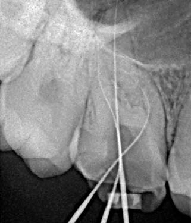
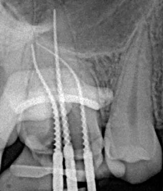
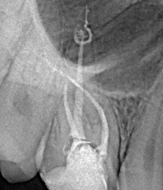
Клінічний випадок 3
Пацієнтка 35 років звернулася зі скаргами на болі ниючого характеру і дискомфорт при вживанні їжі. Зуб 48 був покритий металевою коронкою. Рентгендослідження виявило розширення періодонтальної щілини і легкі періапікальні зміни, зуб не реагував на температурні подразники. Після зняття коронки було виявлено каріозну порожнину, виповнену путридними масами. Після створення доступу до кореневих каналів виявлено 4 кореневих канали. Різке викривлення апікальної частини було в дистальному язичному каналі близько 90°, дистальний же щічний виявився прямим. Аналогічна ситуація була і в медіальній системі, де медіальний щічний канал мав викривлення у середній третині, а язичний виявився відносно прямим. Близькість нижньощелепного каналу вимагала особливої обережності як при обробці такої системи кореневих каналів, так і при обтурації.
Навігацію вдалося здійснити за кілька прийомів попередньо вигнутими К-файлами .06, .08, після чого використовувалися ProTaper Universal Sx, рясна іригація розчином гіпохлориту і ЕДТА, потім К-файл 0.10, «килимова доріжка» була створена інструментом Proglider у всіх 4 каналах. Препарування каналів робилося інструментами з реципрокним обертанням Wave One small у всіх каналах, канали обтуровані системою GuttaCore із силером АН Plus.
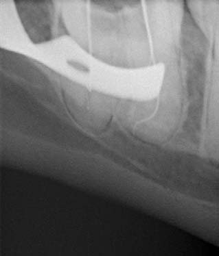
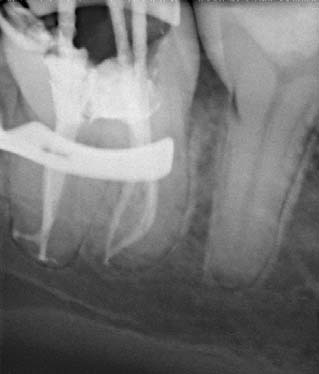
Клінічний випадок 4
Пацієнт 53 років звернувся в клініку зі скаргами на дискомфорт у зубі на верхній щелепі ліворуч. Після видалення старої реставрації виявлено сполучення з порожниною зуба. Було створено прямолінійний доступ і виявлено 4 кореневих канали. За даними рентгендослідження, медіальний щічний канал №2 виявився з вигином у дистальний бік в апікальній ділянці під кутом 90° і був довжиною 25 мм, тоді як медіальний щічний №1 був прямим і мав довжину 22 мм. Обидва канали мали спільний апікальний отвір. Дистальний щічний канал мав легке викривлення в апікальній ділянці також під кутом 90° і завдовжки 23,5 мм. Піднебінний канал мав легке викривлення в дистальний бік і довжину 24 мм.
Навігацію кореневих каналів до робочої довжини провели К-файлом 0.10. «Килимова доріжка» була сформована Pathfiles 0.13, 0.16, 0.19 у всіх кореневих каналах, крім дистального щічного, в якому вдалося машинними нікельтитановими інструментами пройти тільки 22,5 мм до формування викривлення. Робота з препарування кореневих каналів провадилася ProTaper Next X1, X2 у всіх кореневих каналах щічної системи і до Х3 у піднебінному каналі. Фінішна іригація робилася з великим об'ємом іригантів і збільшенням часу експозиції та звукової активації.
Для того, щоб якісно очистити від органічних і неорганічних складників дистальний щічний канал, який не був пройдений до робочої довжини машинними інструментами, застосували протокол фінішної іригації доктора Філіппо Сантарканжело, який полягає в тому, що фінішна іригація робиться, як сказано вище, великим об'ємом іригантів. Останнім розчином в ролі іриганта повинен бути гіпохлорит натрію 3%, який слід випарювати з кореневого каналу за 3-4 прийоми з експозицією 2-3 секунди гарячим плагером №1 з температурою 200°С (Calamus Dual), потім канал промивають дистильованою водою або фізіологічним розчином, висушують паперовими штифтами, і можна братися до обтурації.
Обтурацію кореневих каналів у цьому випадку було проведено таким чином: піднебінний кореневий канал і дистальний щічний — вертикальна гаряча конденсація гутаперчею із силером AH Plus; медіальна щічна система — системою GuttaCore із силером АН Plus, оскільки різка кривизна в апікальній ділянці і велика довжина кореневих каналів могли перешкодити створенню достатнього гідравлічного тиску в апікальній ділянці для її повної герметизації обтураційним матеріалом при використанні техніки безперервної хвилі. Зверніть увагу на заповнення обтураційним матеріалом ділянки викривлення дистального щічного каналу, що було можливо завдяки якісній хімічній обробці іригантами.
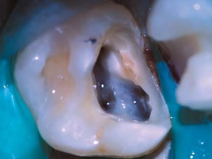
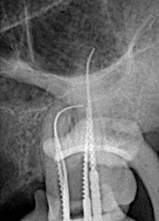
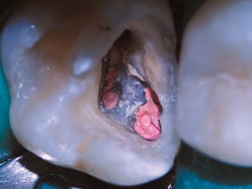
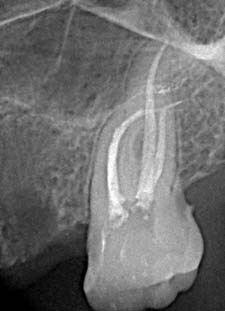
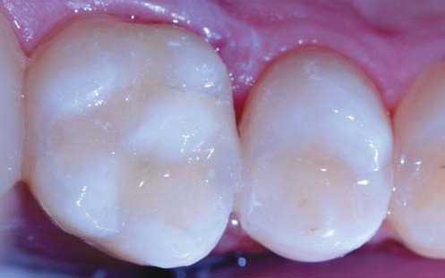
Клінічний випадок 5
Пацієнтка 38 років звернулася зі скаргами на дефект у зубі 47 і дискомфорт при вживанні холодної та гарячої їжі. Був діагностований хронічний фіброзний пульпіт. Після створення доступу до кореневих каналів виявлено 2 кореневих канали у медіальній системі і дистальний канал С-форми. Рентгенологічне дослідження виявило, що медіальні кореневі канали мали вигини в середній третині. Для дослідження анатомії дистальної системи кореневих каналів рентгенологічного дослідження було недостатньо, оскільки анатомія таких кореневих каналів вельми варіабельна. Робота з ендодонтичним мікроскопом у таких клінічних випадках обов'язкова.
Створення прямолінійного доступу до кореневих каналів провадилося насадкою для ультразвукової обробки StartX №1 (Dentsply Maillefer), потім була використана насадка StartХ №3 для обробки коронкової частини С-форми каналу, в результаті якої в середній третині виявлено 2 апікальних відгалуження. Наступним етапом була навігація кореневих каналів. Після роботи насадками StartХ проведено іригацію верхньої третини С-форми каналу гіпохлоритом натрію 5,25% і ЕДТА 17% поперемінно з активацією розчину по 20 с для кращої евакуації дентинних ошурків і видалення органічних залишків. У медіальній системі навігація робилася К-файлами 0.10, навігацію дистальної системи здійснювали С+файлами 0.10. «Килимова доріжка» була створена інструментом Proglider. Препарування кореневих каналів — Wave One small. Фінішна іригація провадилася технікою доктора Філіппо Сантарканжело, а обтурація — вертикальною гарячою конденсацією гутаперчею із силером AH Plus.
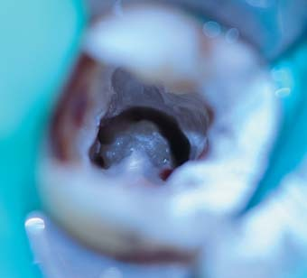
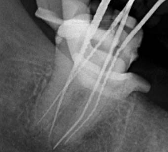
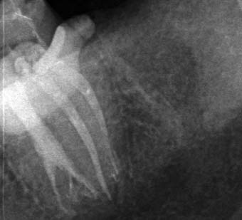
Висновки
Викривлені канали — це, безумовно, непроста клінічна ситуація, але при правильному застосуванні сучасних ендодонтичних інструментів, правил іригації та обтурації її можна успішно вирішити.
Література
- Shafer E, Dies C, Hoppe W, Tapel J. Roentgenografic investigation of frequency and degree of canal curvatures in human permanent teeth. J. Endod 2002; 28; 211-216.
- Gutman JL, Lovdahl PE. Problem Solving in Endodontics, ed 5/ St. Louis; 2011.
- Adomo CG, Yoshioka T, Sudo H. The effect of working length and root canal preparation technique on crach development in the apical root canal wall/ Int. Endod 2010; 43; 321-327.
- Frank J. Vertucci. Root canal morphology and its relationship to endodontic procedures. Endod 2005; 10; 3-29.
- PJ van der Vyver, F Paleker, CH Jonker. Comparison of preparationes of three different rotary glide path instrument systems/ SADJ may 2015. Vol 70 no 4; 144-147.
- West J. Manual versus mechanical glide path. Dentistry Today 2011; 30; 36-45.
- PJ van der Vyver, F Paleker. Clinical managment of complex mandibular first molars with CBCT Protaper Next and GuttaCore. International Dentistry — African Edition vol. 3, no 6; 36-55.